What Could You Build in Your Garden?
An office, a studio, a room for the kids — or, since 2026, a home.
What are you looking for?
What is PlotNua?
PlotNua helps Irish homeowners discover what their property could make possible — and understand what each option would really take.
We research the possibilities so you can make a more confident decision.
PlotNua
PlotNua helps Irish homeowners see what their property could make possible — and understand what each option would really take, before committing to anything.
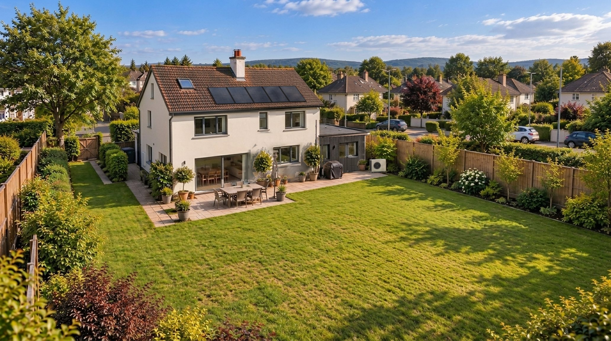
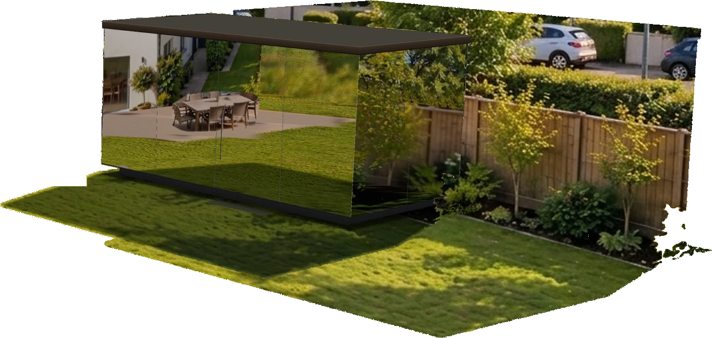
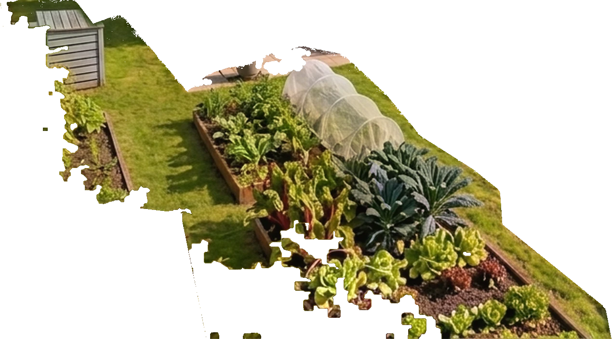
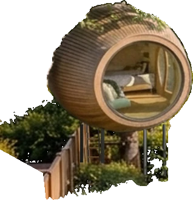
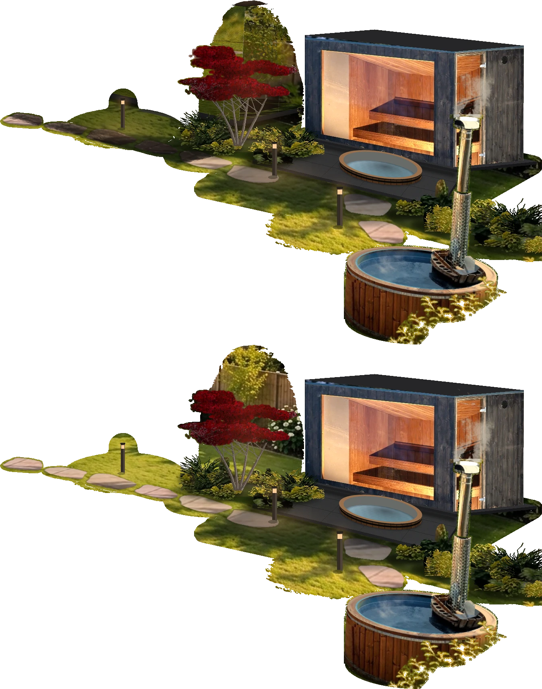
Garden possibilities illustrated. Hot tub: TimberIN. This garden scene combines AI-generated illustration with adapted photography of a TimberIN hot tub.
Some of it you can see. Some of it is under the lawn, or down the street. Move the lens to look closer.
Available today Depends on the site or the house Emerging · not available to Irish homes Illustrative possibility · not assessed Drawings are illustrations, not part of the picture.
AI-generated illustration.
PlotNua helps you discover possibilities you may never have considered for your property.
A Discovery is one researched opportunity for your property.
Some Discoveries include a Property Check — a few simple questions that help you see what the possibility could mean for your own home.
An office, a studio, a room for the kids — or, since 2026, a home.
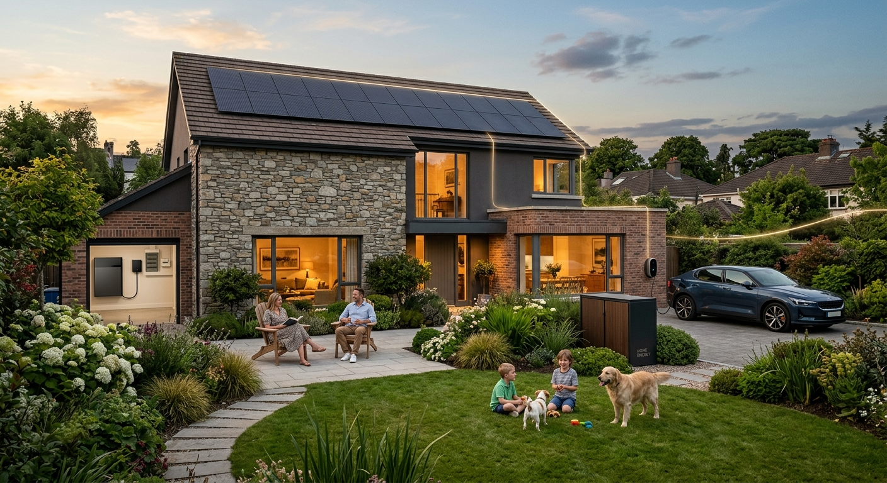
Some Irish homes now make their own electricity, and are paid for what they do not use.

Let someone nearby grow food on a small part of your garden.

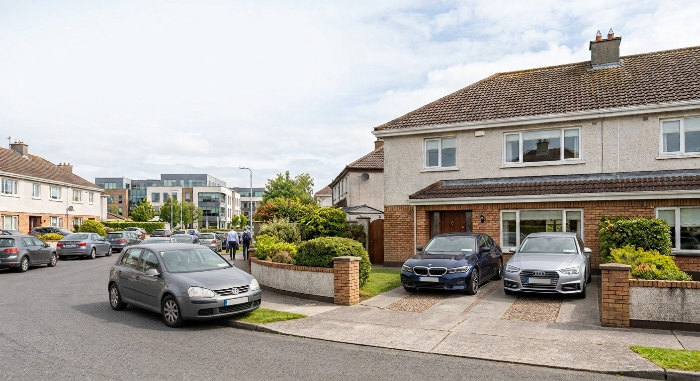
Your driveway is empty for most of the day. Someone nearby may already need it.
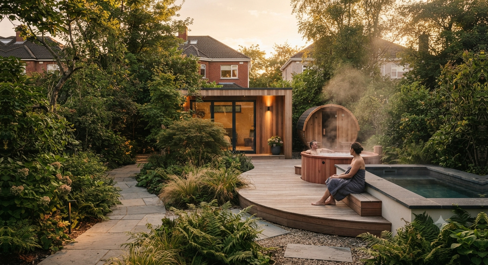
The smallest way to make your garden somewhere you go takes about a square metre — and the biggest is the whole garden.

The space above your garden rarely gets counted — and you do not even need a tree to use it.
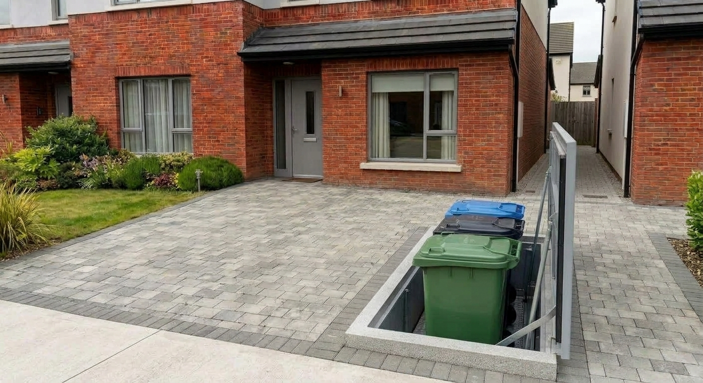
Ordinary wheelie bins can be stored below ground and raised when they are needed.
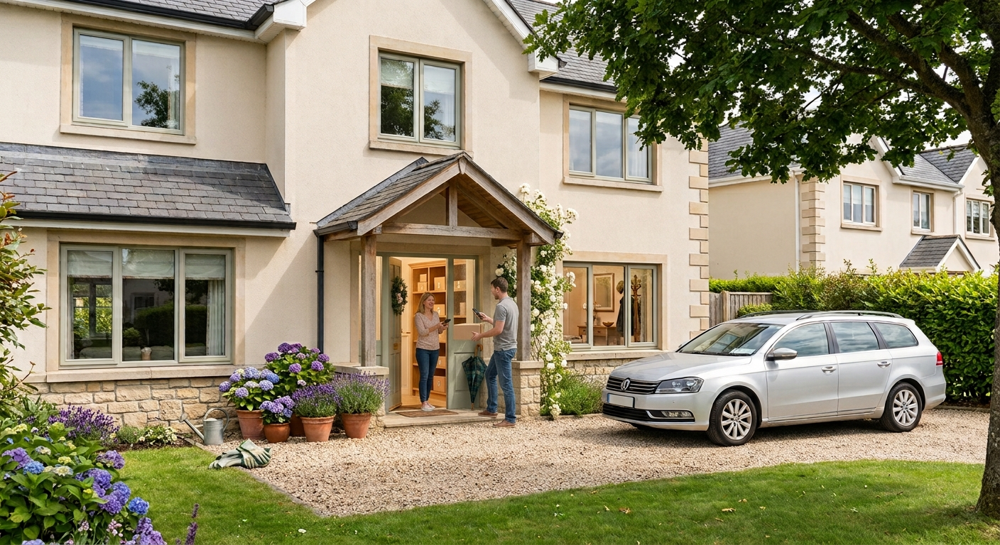
A few homes on every road are better placed than the rest to take in a parcel.
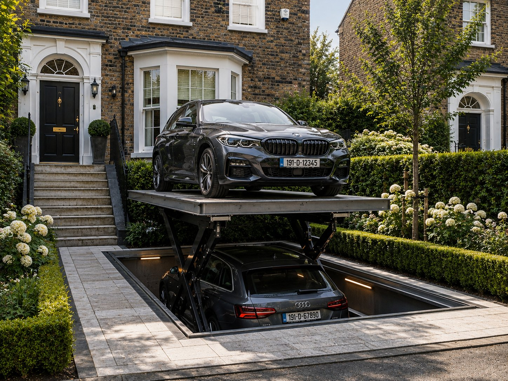
Stacked, lowered and concealed parking, and the front garden it gives back.

Some productions go looking for an ordinary house on an ordinary street. Yours might be one.
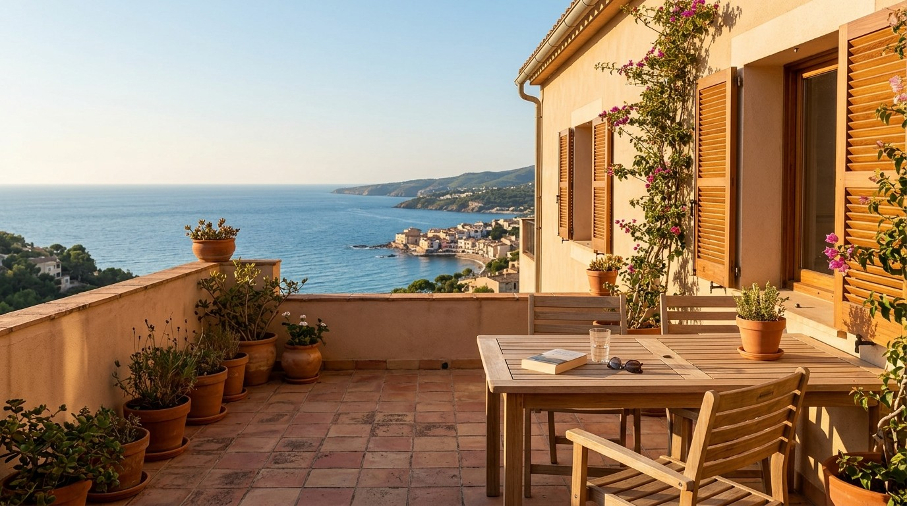
The PlotNua Atlas
…and counting.
PlotNua's growing record of products, suppliers and prices available to Irish homeowners from Ireland and across Europe.
Every recommendation is matched against Atlas so suggestions are based on real products, not assumptions.
New suppliers, products and verified information are added continuously as Atlas expands.